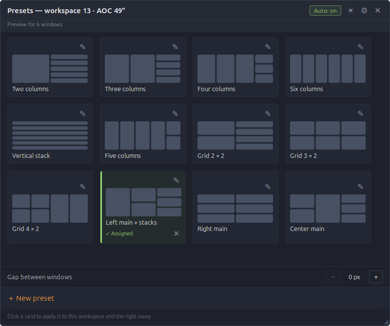
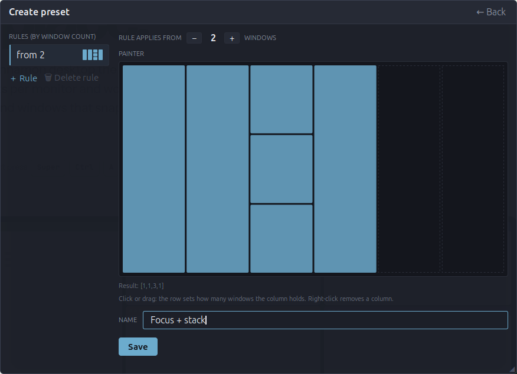

Auto mode
Open a window and the grid makes room. Up to six windows share one row on a wide screen, beyond that they spread over full rows. Close one and the rest close the gap.
SuperCtrlA
greenTile tiles your Cinnamon desktop the moment a window opens. Presets per monitor and workspace, a grid that grows with you, and windows that snap where you drop them.

Every feature, recorded on a 49″ ultrawide: auto mode, presets, drag split, borders, swapping and the settings.
Clicking play loads the video from YouTube (youtube-nocookie.com); nothing is loaded from YouTube before that. Or watch it on YouTube.
Turn it on per monitor and workspace. Everything else happens on its own, or with one shortcut.
Open a window and the grid makes room. Up to six windows share one row on a wide screen, beyond that they spread over full rows. Close one and the rest close the gap.
Paint columns in a 6 × 4 grid and set from how many windows each rule applies. Assign a preset to any monitor and workspace.
Hold a window over the edge of another. A preview shows the new column, stack or row before you let go.
Drag an edge, or nudge it from the keyboard. Hold the key and it speeds up.
Trade places with the neighbour, walk on to the next monitor and further onto the next workspace.
Let a window float with one key, or keep whole apps out of the grid with a list you fill from your installed applications.
The preset panel picks up the accent color of your Cinnamon theme, live, even when you switch themes. Or pick your own.

Click or drag in the 6 × 4 painter: each column holds as many windows as the row you pick. Add a rule for every window count that needs its own shape, give the preset a name and save. If it is assigned to the workspace, the windows move right away.
Things you stop noticing after a day, because they simply work. The complete list is in FEATURES.md.
Move a window by hand and let go. It lands in the slot under the pointer and its neighbours make room. Drag it to another monitor and both screens retile.
A preset made for four windows still works with three or two. Stacks shrink first, then columns, so the screen is always fully used.
Set 0 to 48 px in the preset panel. Only the edges where two windows meet move in; the outer edges stay flush with the screen.
Borders you move are stored per window count. A fourth window gets its own layout, and when it closes your three-window borders come back.
Each monitor and workspace keeps its own preset and auto state. Hardware identity uses model and serial; failed detection uses a separate fallback key. After a hotplug greenTile waits for the windows to settle before it tiles.
Windows glide into place in 250 ms. They get their final size at once and only the picture moves, so terminal text does not reflow halfway. You can switch the animation off.
Cinnamon panels that stay visible are kept clear, on every side. Maximized windows are released before they are tiled.
The preset panel follows the desktop's color scheme or stays light or dark. The sun and moon button switches it with one click, and the green state color can follow your theme.
Windows are tiled in the order they already have on screen. Rearrange them by hand and the next retile respects it.
All of them can be changed in the extension settings.
Download the zip from the latest release and run install.sh. On X11, restart Cinnamon to activate the new code, switch greenTile on in the Extensions manager and press SuperCtrlA. Newer Cinnamon versions and Wayland are not yet fully verified. Free software under the GPL v3, a fork of gTile.
# unpack the release zip and install for your user unzip greenTile-*.zip cd greenTile-*/ && ./install.sh # restart Cinnamon on X11 to activate updated code Ctrl+Alt+Esc # or Alt+F2, then r # Wayland: log out and back in; support not yet fully verified # then: Extensions → greenTile → enable